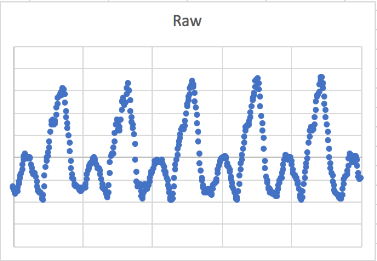
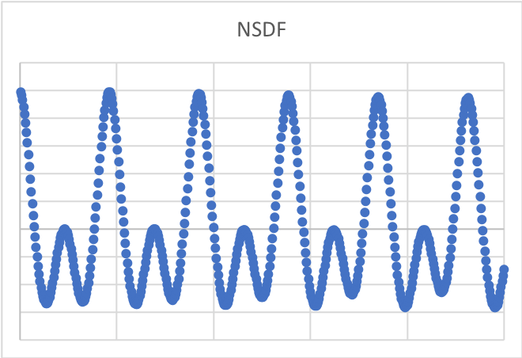

The first half of this project (note detection) was produced for MoozX Internet Ventures Inc. to be integrated into their iOS app Woodshed, a guitar learning platform with thousands of downloads. I am currently implementing the same algorithm into my independent tuner app.
During my upbringing playing musical instruments, I noticed that there was a lack of inexpensive, reliable sound-based digital tuners (often the best are vibration-based). Generally, they're expensive and unreliable in the presence of background noise. Additionally, I've been unable to find a tuner which accurately measures variation in pitch over very small time intervals (such as that during vibrato).
So I decided to develop an iOS tuning app with two main features:
Undisturbed functionality in the presence of non-musical background noise ("white noise") or soft musical background noise
Accurate recreation of vibrato waveforms at low-medium tempos (2 Hz) for review during practice
For this project I implemented the Mcleod Pitch Method as it provides a fast, accurate, and robust method, capable of tracking a musician's (or vocalist's) vibrato.
The ACF calculated in the algorithm compares the signal with a delayed version of itself. ACF terms are larger when both the data and its delayed term is large. Analysis of the correlogram (ACF over a range of lag values) helps to determine whether data consists of white noise or specific non-random features, in this case sinusoids.
The algorithm then calculates the Square Difference Function by, unsurprisingly, squaring the difference of the data with its delayed version. This SDF terms are large when the difference between the data and its delayed term is large, in contrast to the ACF.
The Normalized Square Difference Terms are calculated last, dividing the SDF terms by the ACF terms. This causes data terms which have large delayed terms with similar magnitude to dominate.
Qualitatively, the NSDF terms drastically reduce aperiodic noise. This enables the crucial part of the algorithm: peak detection.
After calculating the NSDF terms, the algorithm attempts to the find fundamental frequency, f0. This is made more difficult by the existence of many harmonics in naturally produced music. To filter these, a threshold is chosen as a fraction of the highest maximum present in the waveform, and peaks beneath the threshold are discarded. The NSDF creates an "artificial" peak at delay 0 and is ignored.
The first of the remaining peaks is chosen and its delay is used as the wavelength corresponding to f0. It is important to use the first peak rather than, for example, the last peak and dividing by the quantity of peaks. The latter method may appear to provide a more accurate, consistent value due to averaging over more data; it is unreliable, however, due to false positive and negative peaks caused by the interference of f0 and its harmonics.
Lastly, the pitch is calculated from f0 by the simple logarithmic conversion used in the 12-tone scale.
 I chose a sample rate of 44.1kHz. By the Nyquist Sampling Theorem, this is enough resolution to recreate the highest note on a piano - definitely sufficient for the app.
To measure vibrato, the sample rate is relatively unimportant; the frequency at which the pitch oscillates is much too low for sampling to be an issue. Rather, the rate at which data is processed is relevant. Again by the Nyquist Sampling Theorem, sampled data must be processed at least 4 times a second. To perform this in the app, I sample and call the pitch algorithm in separate threads due to the significant overlap in timing.
I chose a 75% overlap in time between sampling windows to accurately measure changes in pitch. In iOS, developers access the micropone though AVAudioRecorder objets, and the recorded waveforms are unavailable while recording. Because of this, I used different threads to poll the mic input for each sample window for the fastest response time.
iOS makes no guarantees over updating UI on threads other than the main thread. As such, I initally kept most of the logic on the main thread. This still led to inconsistency with updating the UI; it was only after researching more on iOS threading that I understood why. There is no flushing of UI updates to the screen in iOS; its runloop does not exist on the main queue with the tasks that I called. Hence as the queue constantly had blocks on it, the main thread was never cleared and the UI did not update.
Another option was to use a Timer. In iOS, however, Timers do not iterate consistently for time periods ~100ms or less.
Ultimately I wrote a method which queued recursive calls asynchronously to start the next recording. This ended up being significantly more elegant than my previous attempts - turns out Apple knows what they're doing.
The back-end is essentially complete, and will soon be integrated into Woodshed.
Remaining for Vibratune is a usable UI and, once complete, will be released as well.
Check out my source code for VibraTune here.